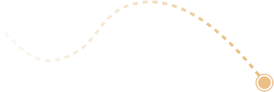
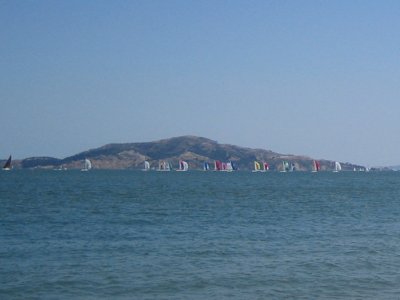

Saturday, 5 August 2006



Today was a stellar day. The weather was amazing. A little cool in the morning but by lunch it had easily hit mid twenties. Reminded me of a nice Hobart summers day.
I caught a cable car to Fisherman's Wharf and walked through Fort Mason and Crissy Field to the Golden Gate Bridge. Everyone was in marathon mode on the paths today. I was informed that last Sunday was the San Francisco Marathon. With the number of people I noticed running I concluded that either last weeks turnout was weak or large number of participants crave pain and didn’t get enough punishment last weekend.
While walking the 3 or so mile pathway I noticed a lot happening in the bay. Freight ships, cruises and canoes roamed the water. A very similar sight to that of a Sunday morning on the Derwent was the sight of yachts in the water. Rob Mundle and his crew had a tough morning on the coffee grinders but by afternoon the wind was up and they had a chance to pop the Spinny.
There are a few more pics of San Fran here.
